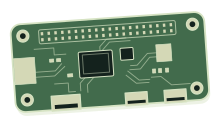
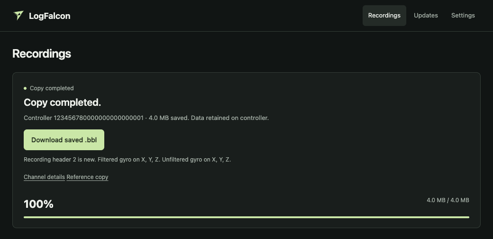

For FPV drones running Betaflight
Flight logs,
without a laptop.
Plug your flight controller into a Raspberry Pi between flights. It copies the blackbox recording over USB, ready to download to your phone over the Pi’s own Wi-Fi.

- USB collection
- Local Wi-Fi
- Original retained by default
From the controller to your phone
Copy the flash
Stop recording and plug the controller into the Pi’s USB data port. The copy starts automatically.
See what’s new
Earlier flights can appear in later copies. The dashboard can recognise a repeat copy or a new recording header.
Make a field note
Give the controller a nickname and jot down what you noticed on that flight while it’s still fresh.
Take the logs home
Download a .bbl to open in the Betaflight App’s Blackbox Viewer, or export several recordings and their notes in one ZIP.

Compatibility
In Betaflight, check that your controller’s Blackbox Device is set to SPI Flash. LogFalcon reads that internal flash over USB. Controllers that log to an SD card, iNav and ArduPilot are outside its scope.
What you need
- Pi Zero W or Zero 2 W
- 16 GB+ microSD card
- 5 V USB supply
- OTG adapter and data cable
- Betaflight FC with SPI flash
Choose a version on GitHub Releases. The setup guide walks you through flashing a spare card and downloading your first flight log.
Open the setup guideInside LogFalcon
LogFalcon is an open-source Go project maintained by Eugene Prokudin. The USB copier runs separately from the dashboard, so a pilot can collect a flight with the phone in their pocket. When they join the hotspot, the dashboard reads the result from the Pi.
The copier checks the byte count and rereads the saved file to compare its SHA-256 with the incoming data. The original stays on the controller by default. Even with erasure switched on, LogFalcon checks the controller’s flash usage again. If it has changed, the original stays put.